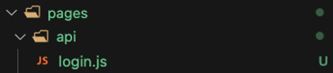
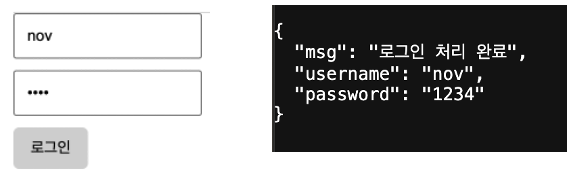
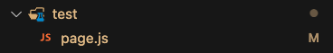
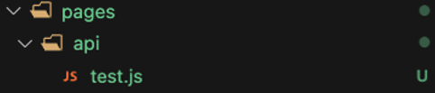
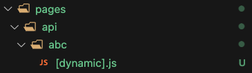

NextJS 환경에서 클라이언트(브라우저) 단에서 서버단으로 데이터를 전송하는 방식은 아래와 같이 크게 4가지로 구분할 수 있다.
1. <Form> 태그를 활용한 전송
2. Query String
3. 다이나믹 라우팅 + URL Parameter
4. fetch API를 사용해 body에 직접 데이터를 넣어서 전송하기
이번 포스팅에서는 위 4가지 방식의 장단점 그리고 사용 방법에 대해서 간략하게 정리하고자 한다.
1. <Form> 태그를 활용한 전송
page.js
form tag method 속성에 HTTP Method를 정의, action 속성에 api 요청 주소를 명시한다.
export default function ServerComponent() {
return (
<div>
<form method="POST" action="/api/login">
<input name="username" placeholder="ID" required />
<input name="password" type="password" placeholder="PW" required />
<button type="submit">로그인</button>
</form>
</div>
);
}
login api
page.js로부터 입력받은 ID, PW 정보가 Json 형태로 브라우저에 반환된다.

export default function handler(req, res) {
if (req.method === 'POST') {
const { username, password } = req.body
res.status(200).json({ msg: '로그인 처리 완료', username, password })
}
}
사용 상황
로그인, 회원가입, 주문, 배송 등 특정 폼을 사용한 양식을 제출할 때 사용하면 용이하다.
사용자와 웹사이트 혹은 어플리케이션간 상호 작용할 때 빈번하게 사용되는 태그로 페이지가 재랜더링 된다는 단점이 있다.
자세한 사용 방법은 아래 블로그를 참고하자.
https://inpa.tistory.com/entry/HTML-%F0%9F%93%9A-%ED%8F%BCForm-%ED%83%9C%EA%B7%B8-%EC%A0%95%EB%A6%AC
?️ 폼(Form) 태그 양식 & 종류 - 한방 정리
폼(Form) 양식 HTML 에선 브라우저의 내장 요소를 사용하여 웹 양식에 대한 지원을 제공한다. 예를들어 우리가 특정 사이트에 로그인 할때 아래와 같이 계정 아이디와 비밀번호를 입력하는 화면을
inpa.tistory.com
2. Query String
별도의 메시지 바디가 존재하지 않으며, Url에 데이터 정보를 포함시켜 ?Key=value 형식으로 데이터를 전송하는 방식이다.
&구분자를 사용해 다량의 key-value쌍을 보내는것 또한 가능하다.
page.js
JS의 fetch API를 사용해야 하기에 Client Component로 생성해 주어야 한다.
Client Component와 Server Component의 차이점은 아래 포스팅을 참고하자.
https://novlog.tistory.com/entry/Nextjs-Client-Component-vs-Server-Component

'use client'
export default function ClientComponent() {
return (
<div>
<span onClick = {(e) => {
fetch('/api/test?name=kim&age=20')
}}>Send</span>
</div>
);
}
pages/api/test.js

export default function handler(request, response) {
console.log(request.query)
return response.status(200).json()
}
request parameter의 query property에 접근하면 Client단에서 보낸 Query String에 접근 가능하다
{ name: 'kim', age: '20' }
사용 상황
단순 페이지 정렬, 검색, 필터링, 페이징 등에서 자주 사용되는 기법이다.
GET 요청임에도 불구하고 데이터를 서버로 전송할 수 있으며 무엇보다 간편하다는 장점이 있지만
Url에 데이터가 노출되기에 비밀번호와 같은 민감한 정보는 절대로 쿼리 스트링 방식을 사용해서는 안된다.
3. 다이나믹 라우팅 + Url Parameter
NextJS의 다이나믹 라우팅 기법을 사용해 URL Parameter로 데이터를 전송하는 기법이다.
다이나믹 라우팅이란 api 주소를 [ ] 대괄호로 묶어주면 [ ] 안에 어떠한 요청 문자열이 들어와도 해당 코드로 라우팅 시켜주는 기법이다.
예시로 폴더 구조가 아래 사진과 같이 되어있다고 가정해 보자.

만약 클라이언트단에서 api/abc/test로 api 요청이 들어와도 api/abc/test.js로 api 요청을 처리하며
api/abc/nov로 api 요청이 들어오면 api/abc/nov.js로 api 요청을 처리한다.
나머지 코드는 Query-String 방식과 동일하며, request.query로 접근해 요청 정보를 받아온다.
page.js
'use client'
export default function ClientComponent() {
return (
<div>
<span onClick = {(e) => {
// fetch('/api/test?name=kim&age=20')
fetch('/api/abc/nov')
}}>Send</span>
</div>
);
}
api/abc/[dynamic].js
export default function handler(request, response) {
console.log(request.query)
return response.status(200).json()
}
사용상황
REST API에 적합한 방식이다.
예시로 특정 게시글의 id를 조회하는 경우에 다이나믹 라우팅 방식을 사용하면, 여러 개의 API를 명세할 필요 없이 단 하나의 js 파일로 게시글 조회와 관련된 post 요청을 모두 처리할 수 있다.
4. fetch API를 사용해 body에 직접 데이터를 넣어서 전송하기
JavaScript의 fetch API를 사용해 body에 직접 데이터를 넣어 전송하는 방법이다.
fetch의 첫 번째 파라미터에 url 주소를 작성한 뒤, 두 번째 파라미터에 객체 형식으로 method 속성에는 메서드 타입을, body에는 전송할 데이터를 명시한다.
fetch API와 관련된 자세한 내용을 추후에 따로 정리할 예정이다.
page.js
'use client'
export default function ClientComponent() {
return (
<span onClick = {(r) => {
fetch('/api/test', {
method: 'POST',
body: "Hello Nov"
}).then((r) => {
return r.json()
})
}}>Send</span>
);
}
api/test.js
fetch는 비동기 방식으로 동작하기에 handler 함수에 async 키워드를 붙여주자
export default async function handler(request, response) {
if (request.method == 'POST') {
console.log(request.body)
response.status(200).json("Post Request Compelete")
}
}Hello Nov
사용 상황
댓글 작성, DB 입출력 등 비동기처리가 필요한 기능에 사용하면 된다.